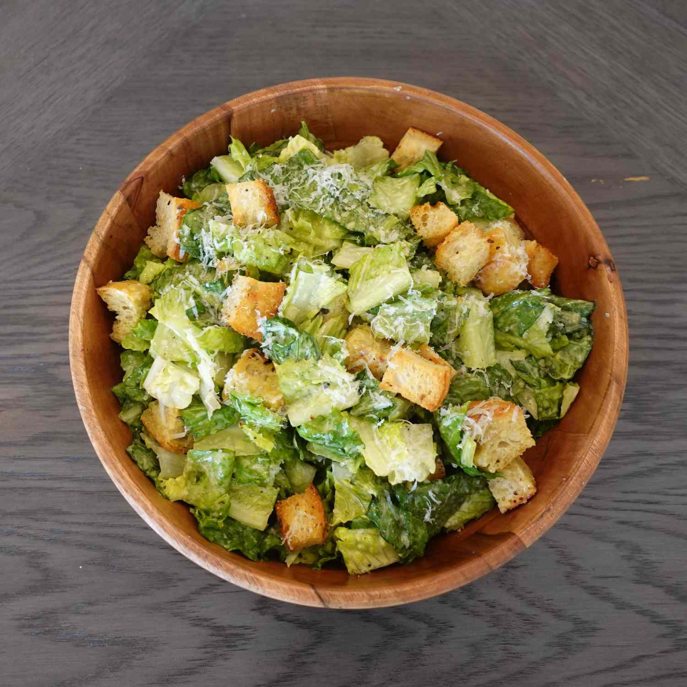

Caesar Salad Recipe

Description
While picking up a bottle of store-bought Caesar dressing may work in a pinch, nothing beats a homemade Caesar salad. The fresh lettuce, crunchy croutons, savory dressing, and delicious cheese create the perfect combination that's surprisingly simple to throw together.
Ingredients
- 2 anchovy fillets
- 2 cloves garlic, chopped, or to taste
- 1 cup mayonnaise
- 1/3 cup grated Parmesan cheese
- 1/4 cup half-and-half
- 2 tablespoons fresh lemon juice
- 1 tablespoon Dijon mustard
- 2 teaspoons Worcestershire sauce
- romaine lettuce, chopped
- salt and black pepper, to taste
- crutons
Steps
- Combine anchovy fillets with garlic in a food processor and pulse several times to form a paste. Process mayonnaise, Parmesan cheese, half-and-half, lemon juice, Dijon mustard, and Worcestershire sauce with anchovy mixture until dressing is creamy. Refrigerate for 1 hour or more before serving.
- To serve, toss with chopped romaine in a salad bowl with crutons, and shave Parmesan cheese on top of salad; season with salt, black pepper, and a squeeze of fresh lemon juice.